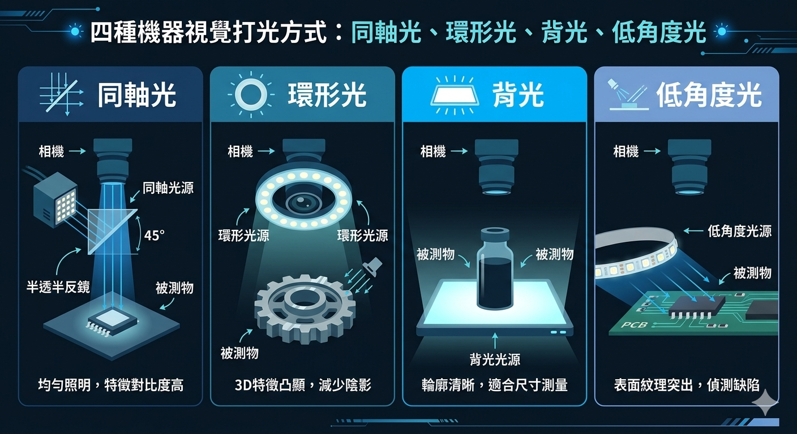

導入不順,通常卡在這幾關
機器視覺導入時,真正讓人卡關的往往不是演算法本身,而是一些看似基本、卻反覆出問題的環節。從實務經驗,最常見的三大挑戰是:定位不準、光源不足、樣本量不足。這篇把這三關的成因與解法一次整理清楚。
挑戰一:定位不準
視覺檢測要先「找到目標在哪」,才能進行後續判斷。定位一旦飄移,再好的演算法也會誤判。常見成因與解法:
成因
- 待測物擺放位置不固定,每次進入視野的角度、位置都不同。
- 機構震動或輸送帶抖動,造成成像瞬間偏移。
- 背景複雜,目標與背景對比不足,定位特徵抓不穩。
解法
- 加治具固定:用機構治具限制待測物的位置與角度,是最直接有效的做法。
- 用穩健的定位演算法:採用對旋轉、縮放不敏感的特徵比對(如樣板匹配、幾何定位)。
- 加觸發同步:用感測器觸發拍照,確保在物件到位、靜止的瞬間成像。
定位是視覺的地基。與其在演算法端硬補償,不如在機構與觸發端把定位條件先做穩,事半功倍。
挑戰二:光源不足或不穩
影像品質有八成取決於打光。光源不對,瑕疵根本顯現不出來,演算法也無能為力。常見成因與解法:
成因
- 亮度不足或不均勻,影像暗部細節丟失。
- 使用環境光(如廠房日光燈),隨時間與天氣變化,成像不穩定。
- 打光方式不對,該凸顯的瑕疵反而被反光或陰影蓋掉。
解法
- 用專用工業光源:別依賴環境光,採用穩定的 LED 工業光源並遮蔽外界光線。
- 選對打光方式:依瑕疵特性選擇,例如表面刮痕用低角度光、透明物用背光、金屬件用同軸光。
- 打光要可重現:固定光源角度、亮度與距離,確保每次成像一致。

挑戰三:樣本量不足
導入 AI 深度學習檢測時,最常見的瓶頸是「不良樣本太少」。產線良率越高,越難蒐集到足夠的不良品影像來訓練模型。常見成因與解法:
成因
- 不良品本來就少,某些罕見瑕疵可能幾個月才出現一次。
- 缺乏系統化的影像蒐集與標註流程。
- 各類瑕疵樣本數量不均,模型偏向多數類別。
解法
- 建立資料回收機制:上線後持續蒐集誤判與漏檢樣本,讓資料越滾越多。
- 資料增強(Data Augmentation):用旋轉、翻轉、調整亮度等方式，從既有樣本擴增資料量。
- 合成缺陷樣本:在良品影像上人工或用生成技術合成瑕疵,補足罕見類別。
- 善用少量樣本方法:採用預訓練模型微調、異常偵測等對樣本量需求較低的做法。
樣本不足不是「等出更多不良品」就能解決,而要靠回收機制、資料增強與合成,主動把資料補起來。
小結:先把基礎做穩
這三大挑戰有個共通點——它們大多不是演算法問題,而是基礎工程沒做扎實。定位靠機構與觸發,影像靠光源設計,模型靠資料累積。把這三個基礎顧好,視覺系統的穩定度與準確率自然會上來。
| 挑戰 | 關鍵解法 |
|---|---|
| 定位不準 | 治具固定、穩健定位演算法、觸發同步 |
| 光源不足 | 專用工業光源、選對打光方式、可重現打光 |
| 樣本量不足 | 資料回收、資料增強、合成樣本、少量樣本方法 |
如果你的視覺專案正卡在這些問題上,歡迎與我們聯絡,我們可以協助你從定位、光源到資料策略逐一排查,把系統調到穩定可用。